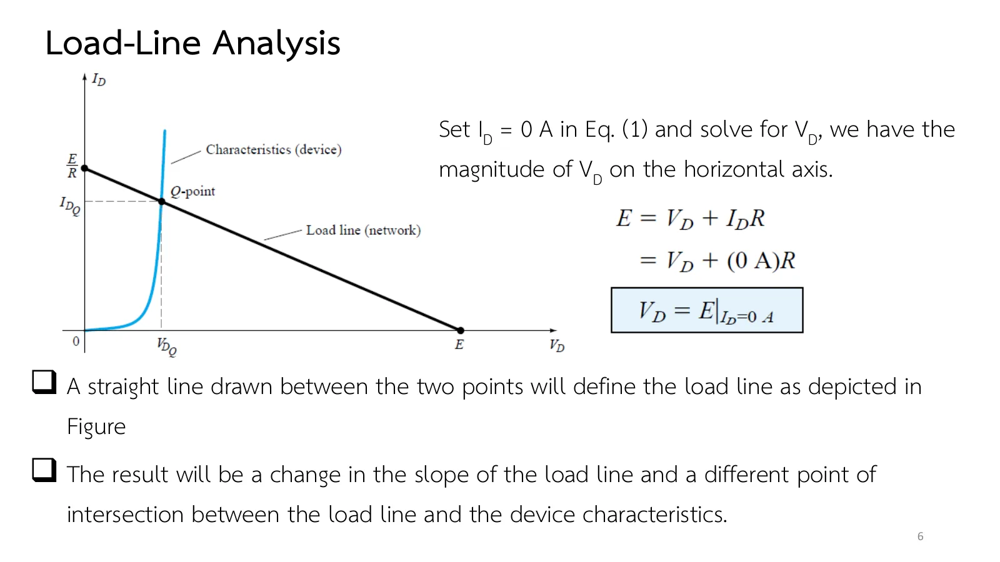
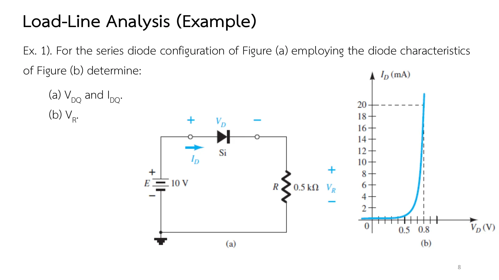
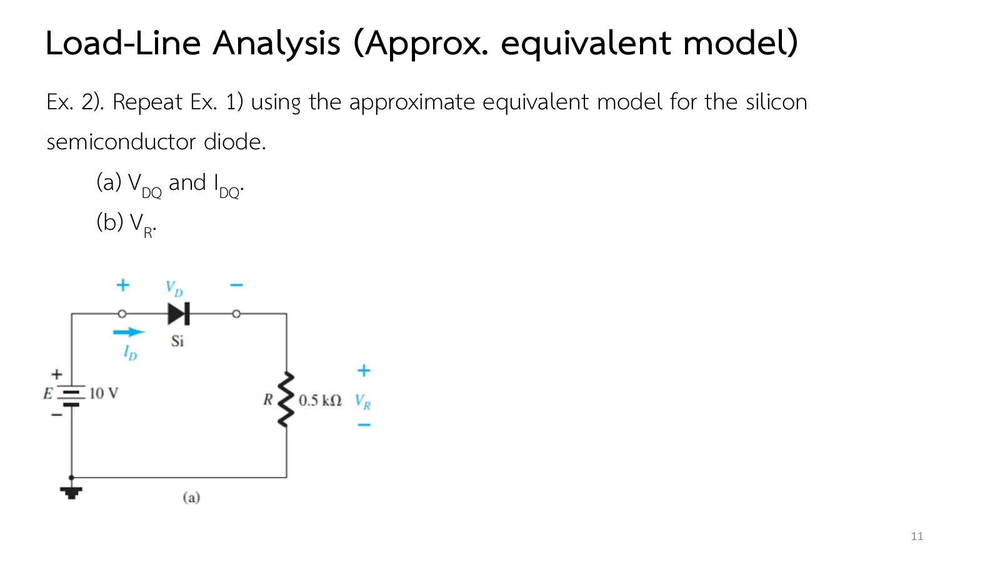
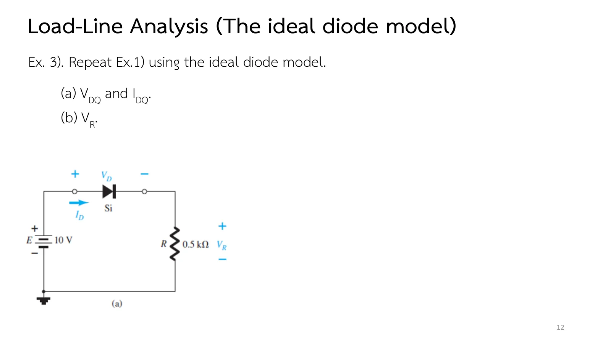

Put a diode and a resistor in series with one battery and ask how much current flows. The question looks easy, yet Ohm's law alone cannot answer it, because the diode's resistance depends on the very current we are looking for. The way out is to let the circuit and the diode each draw their own line on the same graph and find where the two meet: load-line analysis. This page builds it step by step: a load line that moves with E and R (section A), then the same question answered three times in Ex.1–Ex.3, with the actual curve, the approximate model and the ideal model, and more practice at the end (chapter 2 slides, Part I, pp. 3–12 · Boylestad section 2.2).
เปลี่ยน R ความชันของเส้นโหลดเปลี่ยน เปลี่ยน E เส้นเลื่อนขนานไปจากเดิม ทั้งสองกรณีจุดตัดย้ายที่ (สไลด์หน้า 6)
แบบจำลองที่ง่ายกว่าให้คำตอบใกล้เคียง: แบบประมาณ 0.7 V ได้ 18.6 mA เทียบกับ 18.5 mA จากเส้นโค้งจริง ส่วนแบบอุดมคติได้ 20 mA (Ex.1–Ex.3)
Key points of this page
The load line comes from the network alone: Kirchhoff's voltage law round the loop gives \(E = V_D + I_DR\), a straight line on the \(I_D\)–\(V_D\) plane through \(E/R\) on the vertical axis and \(E\) on the horizontal one (slides pp. 4–6).
The Q-point (the quiescent point, still in a dc network) is where the load line meets the diode characteristic: both must hold at once. Down to the horizontal axis gives \(V_{DQ}\), across to the vertical axis \(I_{DQ}\) (slide p. 7).
Changing R changes the slope of the load line; changing E shifts it parallel to itself. Either way the intersection moves (slide p. 6).
Simpler models come close: the 0.7 V approximation gives 18.6 mA against 18.5 mA from the actual curve; the ideal model gives 20 mA (Ex.1–Ex.3).
สไลด์หน้า 4 เริ่มจากวงจรที่ง่ายที่สุด: แหล่งจ่าย E ไดโอด และ R ต่ออนุกรม ไดโอดต้องอยู่บนเส้นโค้งลักษณะสมบัติของมันเสมอ ส่วนวงจรมีกฎของตัวเอง คือกฎแรงดันของเคียร์ชอฟฟ์รอบวง \(E = V_D + I_DR\) จุดทำงานจริงต้องเป็นไปตามทั้งสองเงื่อนไขพร้อมกัน
Chapter 1 studied the diode on its own; chapter 2 puts it to work. Slide p. 3 sets the goal: by the end of the chapter you should understand how diodes behave in dc and ac networks, using a model that suits the job. The same groundwork returns when we reach the construction and analysis of transistors.
Slide p. 4 starts with the simplest circuit: a source E, a diode and R in series. The diode must always sit on its characteristic curve, while the circuit has a rule of its own, Kirchhoff's voltage law round the loop, \(E = V_D + I_DR\). The actual operating point has to satisfy both at once.
สไลด์หน้า 3: เป้าหมายของบทที่ 2 · แตะรูปเพื่อขยายSlide p. 3: the goal of chapter 2 · tap to enlargeสไลด์หน้า 4: วงจรอนุกรมและสมการ (1) · แตะรูปเพื่อขยายSlide p. 4: the series circuit and Eq. (1) · tap to enlarge
The circuit condition is a straight line, so two points are enough: \(V_D = 0\) gives \(E/R\) on the vertical axis and \(I_D = 0\) gives \(E\) on the horizontal one (slides pp. 5–6). Where this line crosses the curve is the Q-point (quiescent point), and \(V_{DQ}\) and \(I_{DQ}\) are read off the two axes (slide p. 7). Move E, then change R, and see which one shifts the line and which one turns it.
สไลด์หน้า 5: ให้ \(V_D = 0\) ได้จุดตัดแกนตั้ง \(E/R\) · แตะรูปเพื่อขยายSlide p. 5: \(V_D = 0\) gives the intercept \(E/R\) · tap to enlarge

สไลด์หน้า 6: ให้ \(I_D = 0\) ได้จุดตัดแกนนอน \(E\) · แตะรูปเพื่อขยายSlide p. 6: \(I_D = 0\) gives the intercept \(E\) · tap to enlargeสไลด์หน้า 7: อ่านจุด Q ลงบนแกนทั้งสอง · แตะรูปเพื่อขยายSlide p. 7: reading the Q-point off both axes · tap to enlarge
วงจรในภาพจำลองคือวงจรของ Ex.1: แหล่งจ่าย E ไดโอดซิลิคอน และ R ต่ออนุกรมกัน ไดโอดใช้เส้นโค้งที่อ่านจากรูป 2.3b ทีละจุด เลื่อน E หรือเลือก R แล้วดูเส้นโหลด (เส้นสีเหลือง) เลื่อนหรือหมุน จุด Q คือจุดตัดที่ตัวแก้วงจรหาได้จริง ลองเปลี่ยนเป็นแบบจำลองโดยประมาณหรืออุดมคติ แล้วกด "ขยายรอบจุดตัด" เพื่อดูว่าต่างกันเท่าไร
The simulated circuit is that of Ex.1: a source E, a silicon diode and R in series, the diode following the curve read off Fig. 2.3b point by point. Move E or pick R and watch the load line (yellow) shift or turn; the Q-point is the crossing the solver actually finds. Switch to the approximate or the ideal model, and press "Zoom on the crossing" to see how far apart they are.
ตอนที่ 2 · คำถามเดียว สามคำตอบ
Part 2 · One question, three answers
วงจรเดียวกัน แบบจำลองสามแบบ
One circuit, three diode models
โจทย์สามข้อถัดไปใช้วงจรเดียวกันทั้งหมด: E = 10 V, R = 0.5 kΩ และไดโอดซิลิคอน แล้วถามคำถามเดิมสามครั้ง ครั้งแรกด้วยเส้นโค้งจริง ครั้งที่สองด้วยแบบจำลองโดยประมาณ ครั้งที่สามด้วยแบบอุดมคติ ครบสามข้อแล้วจะเห็นว่าความง่ายแต่ละขั้นแลกมาด้วยความแม่นยำเท่าใด
The next three problems all use one circuit, E = 10 V, R = 0.5 kΩ and a silicon diode, and ask the same question three times: first with the actual curve, then with the approximate model, then with the ideal model. After the third you will see how much accuracy each simplification costs.
Ex.1 (slide p. 8) gives the diode curve with a scale to read from. Before opening the solution, work out the two intercepts of the load line in your head and guess how close to the knee the Q-point will land.

สไลด์หน้า 8: Ex.1 วงจรและลักษณะสมบัติของไดโอด · แตะรูปเพื่อขยายSlide p. 8: Ex.1, the circuit and the diode characteristic · tap to enlarge
↓ Problem 1: read the Q-point off the actual curve, enter your answer, then compare with the graphical solution at the end
1
Ex.1: จุดทำงานจากเส้นโค้งจริงของไดโอด
Ex.1: the operating point from the actual diode curve
สไลด์หน้า 8–10 · Boylestad Example 2.1 (รูป 2.3–2.4)
Slides pp. 8–10 · Boylestad Example 2.1 (Figs. 2.3–2.4)
โจทย์
วงจรอนุกรมในรูป (a) มี E = 10 V, R = 0.5 kΩ และไดโอดซิลิคอนที่มีลักษณะสมบัติตามรูป (b) จงหา (a) \(V_{DQ}\) และ \(I_{DQ}\) (b) \(V_R\)
Problem
The series circuit of Figure (a) has E = 10 V, R = 0.5 kΩ and a silicon diode with the characteristic of Figure (b). Determine (a) \(V_{DQ}\) and \(I_{DQ}\); (b) \(V_R\).
The actual curve gives the best answer, but it needs the graph and can be read only as finely as the eye allows. Slide p. 11 repeats Ex.1 with the diode replaced by the 0.7 V battery of the approximate model: work it out first, then see how far the answer moves from Ex.1.

สไลด์หน้า 11: Ex.2 · แตะรูปเพื่อขยายSlide p. 11: Ex.2 · tap to enlarge
Repeat Ex.1 using the approximate equivalent model of the silicon diode (a fixed 0.7 V when conducting). Determine (a) \(V_{DQ}\) and \(I_{DQ}\); (b) \(V_R\).
Step 1 puts a 0.7 V battery in place of the diode; step 2 checks Kirchhoff's voltage law with voltage bars (rises positive, drops negative, summing to zero). Try it first.
3
Ex.3: แบบจำลองอุดมคติ
Ex.3: the ideal model
สไลด์หน้า 12 · Boylestad Example 2.3 (รูป 2.6)
Slide p. 12 · Boylestad Example 2.3 (Fig. 2.6)
สไลด์หน้า 12 ตัดทุกอย่างทิ้ง ไดโอดอุดมคติที่นำเป็นเพียงลวดเส้นหนึ่ง ก่อนตอบ ลองเดาว่ากระแสจะมากหรือน้อยกว่าสองข้อแรก และความคลาดเคลื่อนจะมากพอให้กังวลไหม เมื่อ E = 10 V ใหญ่กว่า 0.7 V หลายเท่า
Slide p. 12 strips everything away: the conducting ideal diode is just a piece of wire. Before answering, guess whether the current will be larger or smaller than in the first two problems, and whether the error is worth worrying about when E = 10 V is many times 0.7 V.

สไลด์หน้า 12: Ex.3 · แตะรูปเพื่อขยายSlide p. 12: Ex.3 · tap to enlarge
In section A set R = 0.5 kΩ and move E from 10 V down to 5 V: the load line moves down parallel to itself and its vertical intercept falls to 10 mA, while \(V_{DQ}\) drops by only a few tens of millivolts.
Keep E = 10 V and change R to 2 kΩ: the load line turns about the point (10 V, 0) and flattens; \(I_{DQ}\) falls to about 4.6 mA.
Move E below 0.5 V: the load line meets the curve close to the horizontal axis and the current is almost zero; the approximate model gives exactly zero.
Try this 2 — comparing the models
E = 10 V, R = 0.5 kΩ: switch between the three models and read \(I_{DQ}\) in the side panel: 18.4, 18.6 and 20 mA.
Lower E to 2 V: the ideal model is far off, because 0.7 V is not small next to 2 V (page 1.6).
Chapter 2 slides, Part I, pp. 3–12 · Boylestad & Nashelsky, 11th ed., section 2.2 (Examples 2.1–2.3)
![Slide 3, Introduction: the primary goal of this chapter is to develop a working knowledge of the diode in a variety of configurations using models appropriate for the area of application. By the end of this chapter, the fundamental behavior pattern of diodes in dc and ac networks should be clearly understood. Diodes are frequently employed in the description of the basic construction of transistors and in the analysis of transistor networks in the dc and ac domains. Below, drawings of diode symbols and of a diode with its anode and cathode marked.](slides/ch2a/p03.webp)
![Slide 4, Load-Line Analysis: the intersection of the load line with the characteristics will determine the point of operation of the system; such an analysis is called load-line analysis. The diode is in the on state and conduction has been established; the resulting polarity across the diode is as shown and the first quadrant (V_D and I_D positive) applies. Figure: (a) a series circuit of E, a diode and R, with I_D, V_D and V_R marked; (b) the diode characteristic I_D in mA against V_D. Applying Kirchhoff's voltage law to the series circuit: E − V_D − V_R = 0, boxed E = V_D + I_D R, Eq. (1).](slides/ch2a/p04.webp)

![Slide 7, Load-Line Analysis: by simply drawing a line down to the horizontal axis the diode voltage V_DQ can be determined, whereas a horizontal line from the point of intersection to the vertical axis provides the level of I_DQ. The current I_D is the current through the entire series configuration. The point of operation is usually called the quiescent point (Q-pt.) to reflect its still, unmoving qualities as defined by a dc network. The figure shows the Q-point with dashed lines to V_DQ and I_DQ.](slides/ch2a/p07.webp)